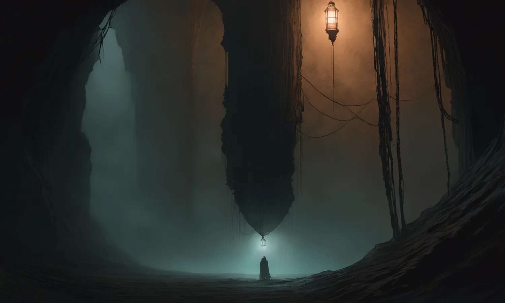
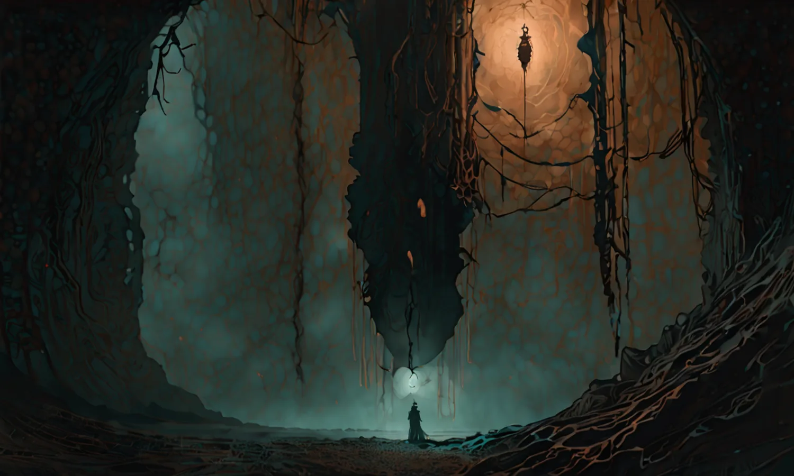
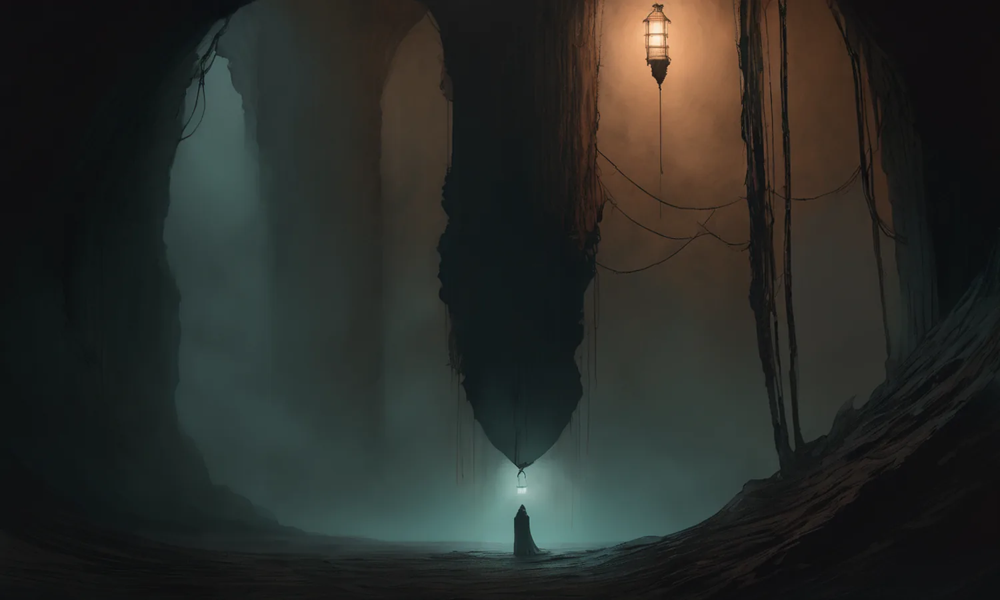
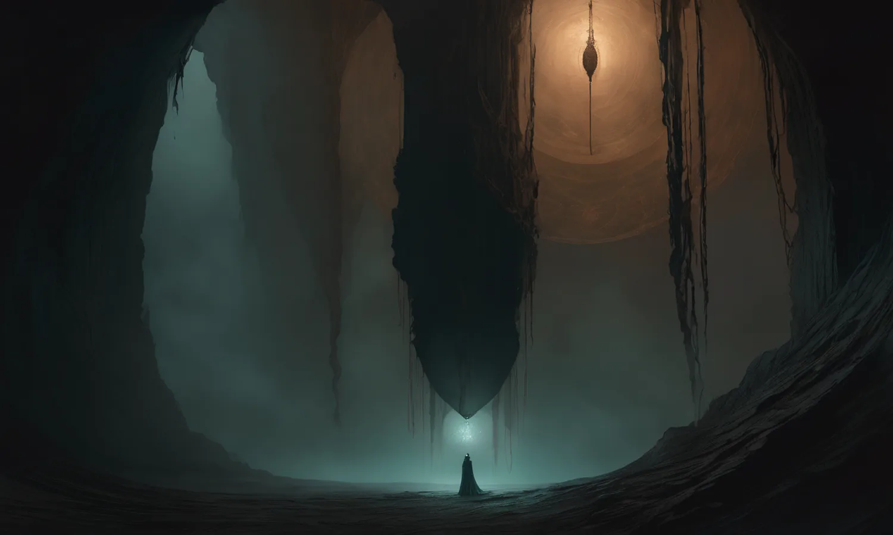

狭間（あわい） 沈むほど、戻り道は細くなる。
読む。選ぶ。視たものを、覚えておく。どう読むかで、降りる道と結末が変わる。最初の旅は、Ωに届くか、浮上するまで。
英語試作は初回の「身体の道」が対象です。他の道・周回の変奏・画像カードは日本語が残ります。言語は開始前に選べます。再読み込みで日本語に戻ります。
深度を読み込み中…
設定はこのページ内で有効です。再読み込みで標準に戻ります。周回・認識・痕跡は変えません。
OSの視覚効果軽減を使っている場合、文字は常に全文表示になります。
音は「沈む」のあとに鳴ります。0%で無音、100%がこれまでの音量です。